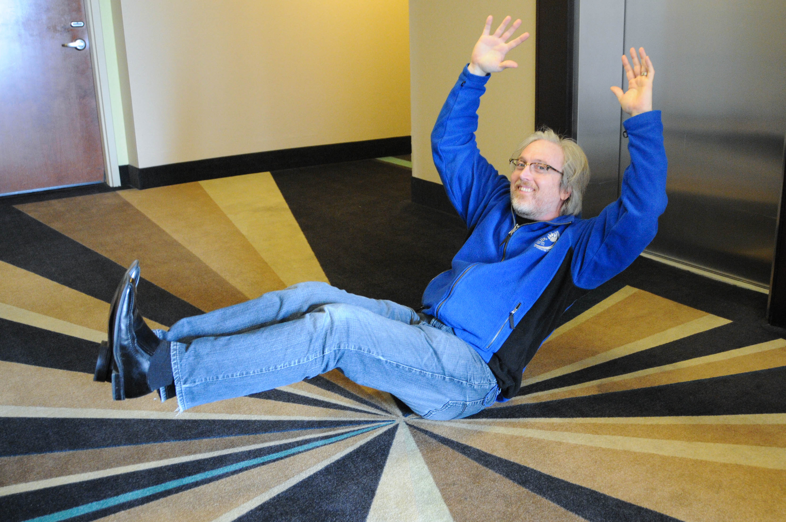

“The crux of the biscuit is the apostrophe.” –Frank Zappa
I graduated from Penn State in August 2014 with an M.S. in statistics. I did my undergraduate at Tulane University in New Orleans in electrical engineering and computer science. I worked for several years at TVA and applied combinatorial optimization to coal burning and linear programming to running the reservoir system. The program led to a 2% increase in coal burn efficiency world wide leading to massive savings–and lower power bills for all.
Worked as a consultant for many years, of which the capstone project was working for Air Force One through Walter Reed Hospital. It’s a great honor when one’s software is part of the Air Force One tooling–and the first closed loop medical device approved by the Food and Drug Administration.
Got hired full time at Vanderbilt’s Cancer Biology to maintain math models of cancer progression and help run an automated microscope. Working with the microscope data, it led me to statistics as the best means to interpret the data for the lab. I discovered a new passion in statistics, and went back and got my masters (which changed my philosophical viewpoint of the world). This has led me to becoming faculty in Biostatistics at Vanderbilt University Medical Center.
I love playing piano, board games, modeling, reading scifi, programming. I’m an NTP according Myers-Briggs, neither an introvert nor an extrovert. One theme through all these years is modeling–whether it be simulating nuclear magnetic resonance or putting together, playing an abstract simulation game or building a scale car and painting it.
For those wanting all the details, take a look at curriculum vitae(CV). Contact me by decoding this puzzle: shawn <dot> garbett <at> vumc.org.
Shawn Garbett. “Cross Platform CD Indexing,” in Linux Journal. December 2003.
Shawn Garbett. “Cleanroom Software Engineering,” in Dr. Dobbs. August 2003.
Quaranta V, Tyson DR, Garbett SP, Weidow B, Harris MP, Georgescu W. “Trait variability of cancer cells quantified by high-content automated microscopy of single cells,” in Methods in Enzymology. 2009;467:23-57. doi: 10.1016/S0076-6879(09)67002-6. Quaranta V, Garbett SP. “Not all noise is waste,” in Nature Methods. 2010 Apr;7(4):269-72. doi: 10.1038/nmeth0410-269.
Hassanein M, Weidow B, Koehler E, Bakane N, Garbett S, Shyr Y, Quaranta V. “Development of high-throughput quantitative assays for glucose uptake in cancer cell lines,” in Molecular Imaging and Biology 2011 Oct;13(5):840-52. doi: 10.1007/s11307-010-0399-5. Gabriel P, Garbett SP, Quaranta V, Tyson DR, Webb GF. “The contribution of age structure to cell population responses to targeted therapeutics,” in Journal Theoretical Biology. 2012 Oct 21;311:19-27. doi: 10.1016/j.jtbi.2012.07.001.
Tyson DR, Garbett SP, Frick PL, Quaranta V. “Fractional proliferation: a method to deconvolve cell population dynamics from single-cell data,” in Nature Methods. 2012 Sep;9(9):923-8. doi: 10.1038/nmeth.2138.
Schildcrout JS, Garbett SP, Heagerty PJ. “Outcome Vector Dependent Sampling with Longitudinal Continuous Response Data: Stratified Sampling Based on Summary Statistics,” in Biometrics. 2013 Feb 14. doi: 10.1111/biom.12013. Markov DA, Little EM, Garbett SP, McCawley LJ. “Variation in diffusion of gases through PDMS due to plasma surface treatment and storage conditions,” in Biomed Microdevices. 2014 Feb;16(1):91-6. doi: 10.1007/s10544-013-9808-2.
Schildcrout JS, Rathouz PJ, Zelnick LR, Garbett SP, Heagerty PJ. “Biased Sampling Designs to Improve Research Efficiency: Factors Influencing Pulmonary Function over Time in Children With Asthma,” in Ann Appl Stat. 2015 Jun;9(2):731-753. PMID: 26322147
Harris LA, Frick PL, Garbett SP, Hardeman KN, Paudel BB, Lopez CF, Quaranta V, Tyson DR. “An unbiased metric of antiproliferative drug effect in vitro,” in Nat Methods. 2016 Jun; 13(6):497-500. doi: 10.1038/nmeth.3852
Schildcrout JS, Haneuse S, Tao R, Zelnick LR, Schisterman EF, Garbett SP, Mercaldo ND, Rathouz PJ, Heagerty PJ. “Two-phase, generalized case-control designs for quantitative longitudinal outcomes.” in Am J Epidemiol. 2019 Jun 5. pii: kwz127. doi: 10.1093/aje/kwz127. Graves JA, Zilu Z, Garbett SP, Peterson J. “The Value of Pharmacogenomic Information” in
Economic Dimensions of Personalized and Precision Medicine. National Bureau of Economic Research. University of Chicago Press. 2019. Chapter 3.
Shi Y, Graves JA, Garbett SP, Zhou Z, Marathi R, Wang X, Harrell FE, Lasko TA, Denny JC, Roden DM, Peterson JF, Schildcrout JS. “A Decision-Theoretic Approach to Panel-Based, Preemptive Genotyping” in MDM Policy Pract. 2019 Aug 17;4(2). doi: 10.1177/2381468319864337.
Nita Limdi, L Cavallari, Craig Lee, William Hillegass, Ann Holmes, Todd Skaar, Maria Pisu, Chrisly Dillon, Amber Beitelshees, Philip Empey, Julio Duarte, Vakaramoko Diaby, Yan Gong, Julie Johnson, John Graves, Shawn Garbett, Zilu Zhou, and Josh Peterson. “Cost-effectiveness of CYP2C19-guided antiplatelet therapy in patients with acute coronary syndrome and percutaneous coronary intervention informed by real-world data” in Pharmacogenomics. 2020 Feb 11. doi: 10.1038/s41397-020-0162-5.
Gregory F. Guzauskas, Shawn Garbett, Zilu Zhou, Scott J. Spencer, Hadley S. Smith, Jing Hao, Dina Hassen, Susan R. Snyder, John A. Graves, Josh F. Peterson, Marc S. Williams, David L. Veenstra. “Cost-effectiveness of Population-Wide Genomic Screening for Hereditary Breast and Ovarian Cancer in the United States“ in JAMA Netw Open. 2020;3(10):e2022874. doi: 10.1001/jamanetworkopen.2020.22874
Graves, John, Shawn Garbett, Zilu Zhou, Jonathan Schildcrout, Josh Peterson. “Comparison of Decision Modeling Approaches for Health Technology and Policy Evaluation.” in Medical Decision Making. 2021, March 18. doi: 10.1177/0272989X21995805
Schildcrout, Jonathan S., Frank E. Harrell, Jr., Patrick J. Heagerty, Sebastien Haneuse, Chiara Di Gravio, Shawn Garbett, Paul J. Rathouz, Bryan E. Shepherd. “Model-assisted analyses of longitudinal, ordinal outcomes with absorbing states” in Statistics in Medicine. 2022. doi: 10.1002/sim.9366
Guzauskas GF, Jiang S, Garbett S, Zhou Z, Spencer SJ, Snyder SR, Graves JA, Williams MS, Hao J, Peterson JF, Veenstra DL. “Cost-effectiveness of population-wide genomic screening for Lynch syndrome in the United States”. Genet Med. 2022 May;24(5):1017-1026. doi: 10.1016/j.gim.2022.01.017. Epub 2022 Feb 25. PMID: 35227606; PMCID: PMC9673900.
Cheryl N. Miller, Keri N. Althoff, David J. Schlueter, Hoda Anton-Culver, Qingxia Chen, Shawn Garbett, Francis Ratsimbazafy, Isaac Thomsen, Elizabeth W. Karlson, Mine Cicek, Ligia A. Pinto, Bradley A. Malin, Lucila Ohno-Machado, Carolyn Williams, David Goldstein, Aymone Kouame, Andrea Ramirez, Kelly A. Gebo, Sheri D. Schully. “Concordance of SARS-CoV-2 Antibody Results during a Period of Low Prevalence” in American Society for Microbiology. 2022 Oct 26;7(5). doi: 10.1128/msphere.00257-22
Hund HC, Frantz SK, Wu H, Adeniran OR, Wong TY, Borgmann AJ, Matsuoka L, Geevarghese S, Alexopoulos S, Shingina A, Meranze SG, Baker JC, Garbett S, Brown DB. “Six-Year Evaluation of Same-Day Discharge Following Conventional Chemoembolization of Hepatocellular Carcinoma” J Vasc Interv Radiol. 2023 Mar;34(3):378-385. doi: 10.1016/j.jvir.2022.11.029.
Gregory F Guzauskas, Shawn Garbett, Zilu Zhou, Jonathan S Schildcrout, John A Graves, Marc S Williams, Jing Hao, Laney K Jones, Scott J Spencer, Shangqing Jiang, David L Veenstra, Josh F Peterson. “Population Genomic Screening for Three Common Hereditary Conditions : A Cost-Effectiveness Analysis” Ann Intern Med. 2023 May;176(5):585-595. doi: 10.7326/M22-0846.
Ortega OO, Ozen M, Wilson BA, Pino JC, Irvin MW, Ildefonso GV, Garbett SP, Lopez CF. “Signal execution modes emerge in biochemical reaction networks calibrated to experimental data”. iScience. 2024 May 16;27(6):109989. doi: 10.1016/j.isci.2024.109989. PMID: 38846004; PMCID: PMC11154230.
Guide A, Sulieman L, Garbett S, Cronin RM, Spotnitz M, Natarajan K, Carroll RJ, Harris P, Chen Q. “Identifying erroneous height and weight values from adult electronic health records in the All of Us research program”. J Biomed Inform. 2024 Jul;155:104660. doi: 10.1016/j.jbi.2024.104660. Epub 2024 May 23. PMID: 38788889.
Guide A, Garbett S, Feng X, Mapes BM, Cook J, Sulieman L, Cronin RM, Chen Q. “Balancing efficacy and computational burden: weighted mean, multiple imputation, and inverse probability weighting methods for item non-response in reliable scales.”. J Am Med Inform Assoc. 2024 Aug 13. doi: 10.1093/jamia/ocae217. PMID: 39138951.